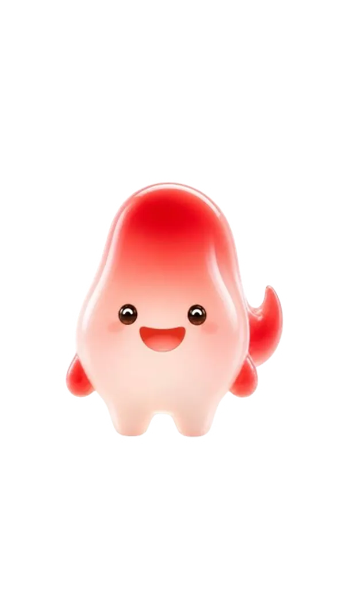

Cómo funciona Saily
Un flujo completo, de principio a fin, que corre solo — desde que llega el primer mensaje hasta que tu asesor se sienta a cerrar la venta.
Paso 1El cliente escribe por WhatsApp o InstagramA cualquier hora, incluso fuera de tu horario de atención.
Paso 2Saily responde en segundosCon el tono y la información de tu negocio, no un mensaje genérico de robot.
Paso 3Hace las preguntas justas para calificarQué busca, cuándo lo necesita, presupuesto aproximado — lo que tú definas.
Paso 4Filtra intención real de compraSepara al curioso del que ya está listo para comprar, sin saturar a tu equipo.
Paso 5Agenda la cita o deriva al asesor correctoEl lead calificado llega a la persona indicada, con todo el contexto ya recopilado.
Paso 6Tu equipo cierra la ventaCon un cliente que ya llegó caliente, sin tiempo perdido en preguntas básicas.

Todo esto corre en piloto automático. Tu equipo no tiene que estar monitoreando el chat para que Saily haga su trabajo.
En qué redes sociales funciona
Saily se conecta directamente a los canales donde tus clientes ya te escriben. No hay que pedirles que bajen una app nueva ni que aprendan a usar algo distinto.
Canal principal
WhatsApp
Se integra a tu número de WhatsApp Business. Responde cada mensaje que llegue, de clientes nuevos o recurrentes, sin que se te escape ninguno.
Canal adicional
Instagram
Atiende los mensajes directos de tu cuenta de Instagram con la misma lógica de calificación, para que ninguna venta se quede varada en un DM.